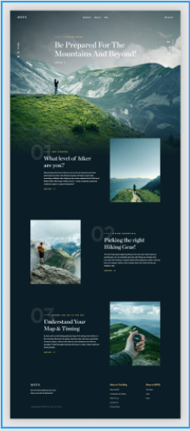

<!DOCTYPE html><html lang="en"><head><meta charset="UTF-8"><meta http-equiv="X-UA-Compatible" content="IE=edge"><meta name="viewport" content="width=device-width, initial-scale=1.0"></head></html><link rel="stylesheet" href="https://cdnjs.cloudflare.com/ajax/libs/animate.css/4.1.1/animate.min.css" /><link rel="stylesheet" href="css/style.css"><title>Моя работа</title><body> <header class="header"><div class="container"> <strong class="logo">FRONTEND </strong><nav class="header__nav" id="menu"><a class="mobile-nav_close" href="#close">«</a><ul> <li> <a href="index.html">Главная</a></li><li> <a href="about.html">Обо мне</a></li><li> <a href="work.html">Работы</a></li><li> <a href="contact.html">Контакты</a></li></ul></nav><a class="mobile-nav_open" href="#menu">☰</a></div></header><hr><div class="block"><div class="block__descr"><p class="block__descr-text">Качественная и уместная анимация веб-страниц радует глаз и помогает в работе. Это – одна из основ веб-дизайна наших дней. Взаимодействие пользователей с современными веб-сайтами серьёзно завязано именно на анимации. Она способна сообщать о неких состояниях страницы, направлять внимание. Анимация помогает пользователю увидеть результат его действий и может влиять на его поведение.</p><h3 class="h3">Программа изучения во время проекта  :</h3><ul> <li> Научиться работать с анимациями в CSS</li><li> Реализовать адаптивные анимации,</li><li> Анимации появления WOW.js</li><li> Изучение Parallax эффектов</li></ul></div><div class="block__item"> <a class="link" href="work/animation/dist/index.html">Просмотреть</a></div></div></body>